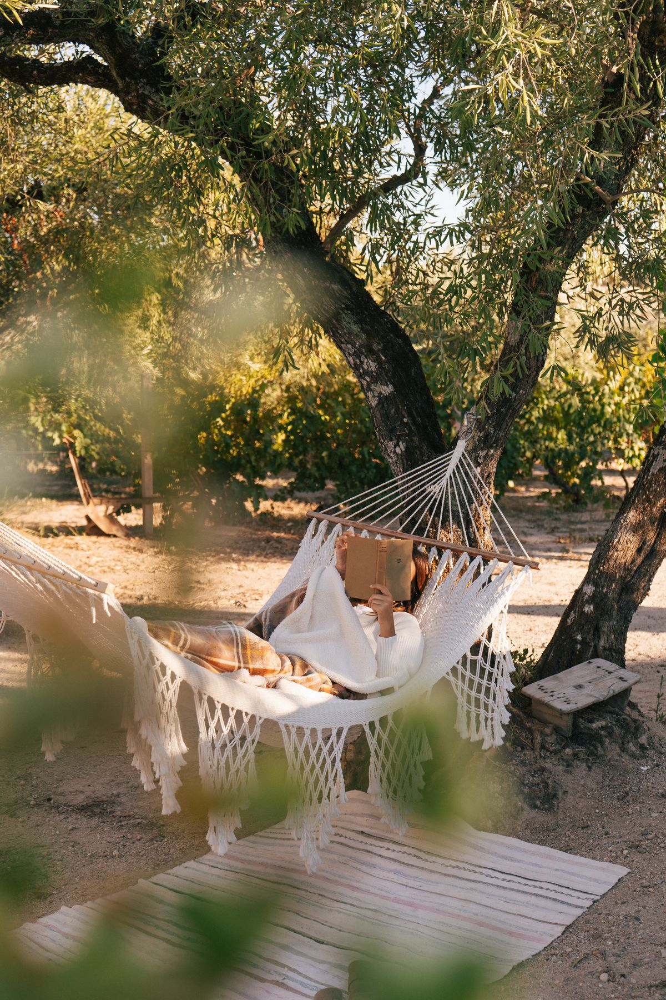
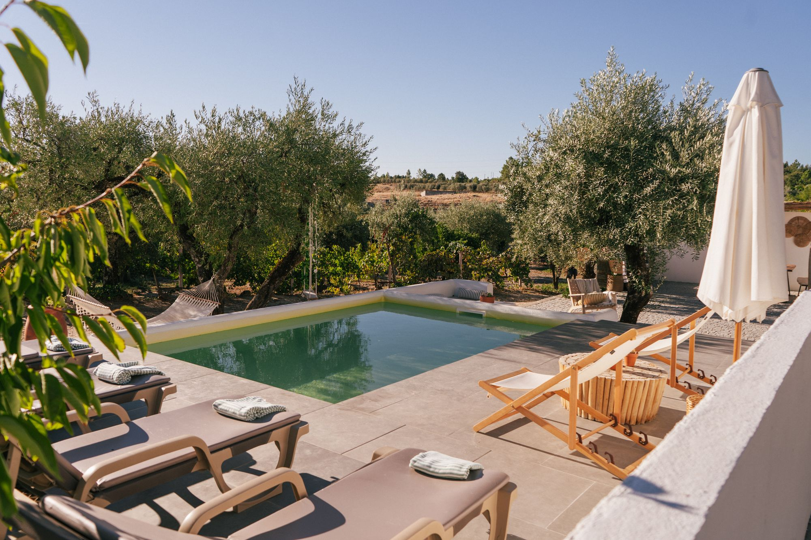
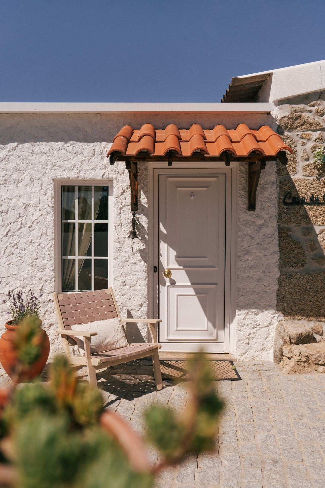
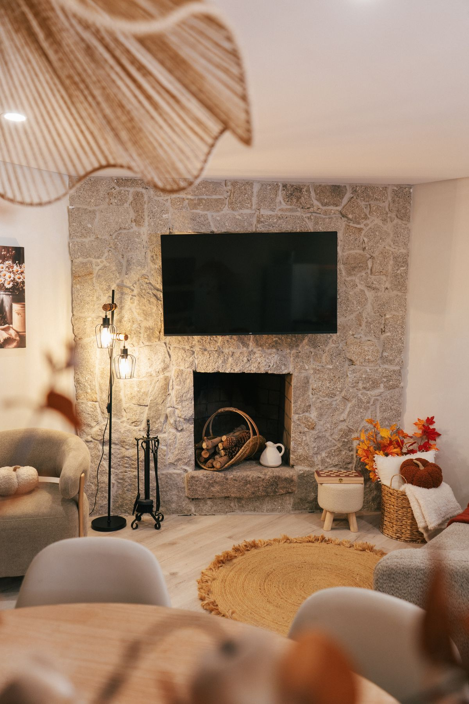
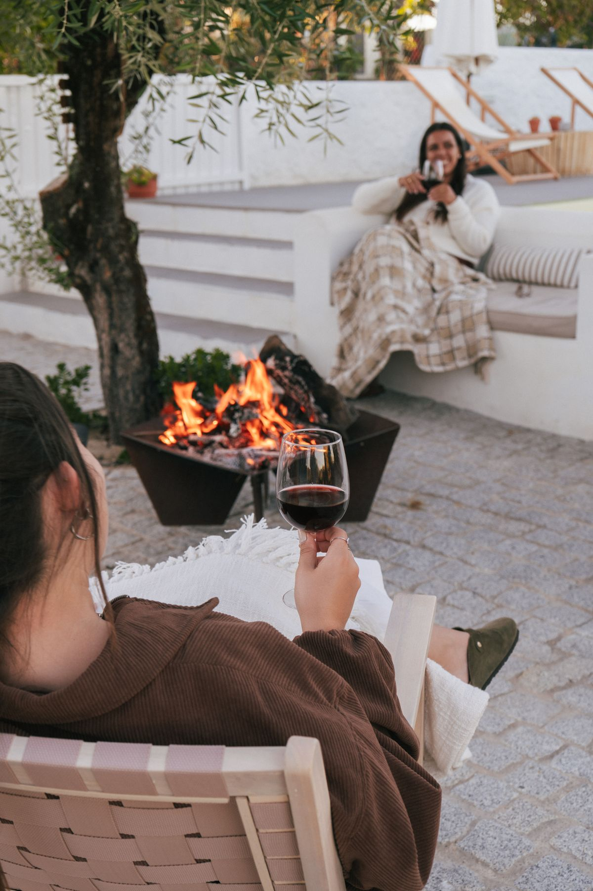
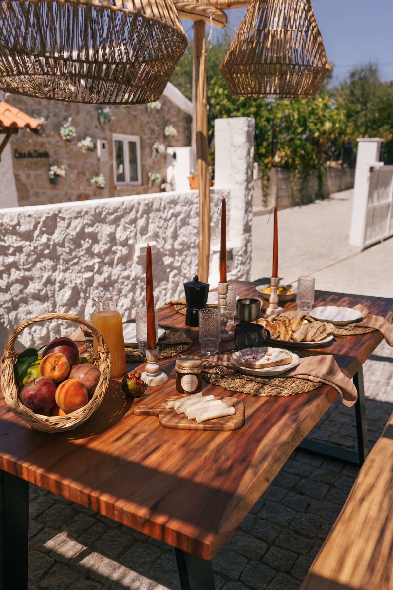
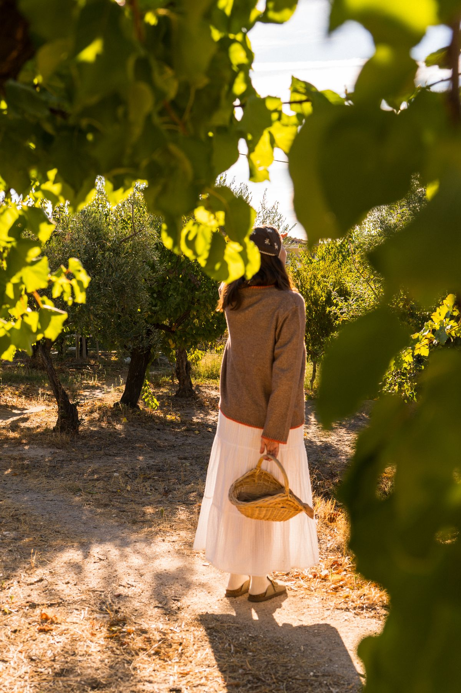
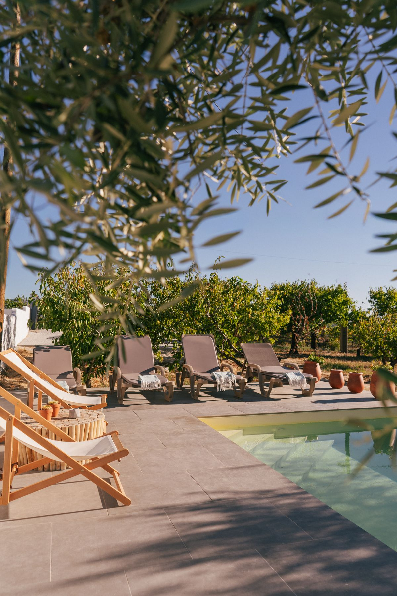

Après-midis à l'ombre
Un hamac entre les oliviers, un livre et rien d'autre à faire.

Atalaia do Campo · Fundão
Sentez-vous chez vous, dans le calme de la campagne.
Bienvenue
À la Casa da Tapada, les journées commencent avec le chant des oiseaux et se terminent sous un ciel rempli d'étoiles. Une maison de campagne soignée dans les moindres détails, entourée d'oliviers et d'arbres fruitiers, pensée pour les couples, les familles et les amis qui veulent troquer l'agitation de la ville contre du temps de qualité.
Ici, vous pouvez lire à l'ombre, plonger dans la piscine, allumer la cheminée et simplement profiter. Nous nous occupons du reste.
Découvrir notre histoire

La maison
Moments

Un hamac entre les oliviers, un livre et rien d'autre à faire.

Des nuits paisibles autour du feu, avec un verre de vin de la région.

De longs petits-déjeuners et des dîners qui s'éternisent, dehors.

En saison, des cerises et des pêches cueillies directement sur l'arbre.
"Comme l'a dit ma femme, le mot qui décrit parfaitement la maison est « maison », parce que nous nous y sommes vraiment sentis chez nous !"
Ruben Adegas
"Ici, le temps passe lentement. Se réveiller le matin au chant des oiseaux, c'est magique. Le soir, contempler le ciel étoilé, c'est magnifique. La Casa da Tapada, c'est CHEZ SOI."
Sílvia Alves
"Cette petite maison a tout ce que nous pouvions souhaiter pour créer des souvenirs en famille. Très chaleureuse et pleine de détails qui font toute la différence !"
Alexandra Oliveira
"Une maison extrêmement chaleureuse, soignée dans les moindres détails et d'une propreté impeccable. L'espace extérieur est tout simplement un rêve !"
Tânia Pinto
"Un week-end qui avait le goût de grandes vacances. La maison est belle, chaleureuse, avec tout ce qu'il nous faut."
Adriana Almeida
"Une destination pour créer des souvenirs inoubliables à deux ou en famille, et les animaux ne sont pas oubliés !"
Laura Ribeiro
"Le calme et la tranquillité nous ont permis de nous reposer de l'agitation de la ville. Nous reviendrons, et elle nous manque déjà."
Monica Emiliano
"Un lieu magique. Tout est parfait, jusqu'au moindre détail. Nous sommes partis la gorge serrée tellement c'était merveilleux."
Sabrina Capdeville
Avis rédigés en portugais, traduits.

Réservez en direct
En réservant directement, vous échangez avec la famille qui s'occupe de la maison et obtenez une réponse personnelle à toutes vos questions.
Vous préférez une plateforme ? Réserver sur Airbnb
La région
La Casa da Tapada est le point de départ idéal pour découvrir la nature, les villages et les traditions de la Beira Interior.
Castelo Novo, Monsanto et Alpedrinha, avec leurs ruelles de pierre et leurs siècles d'histoire.
Sentiers et belvédères dans la Gardunha et, le temps d'une excursion, la Serra da Estrela.
Les fêtes de Saint-Antoine, la foire de la charcuterie et du jambon et les célèbres cerises du Fundão.
Météo
Prévisions pour les prochains jours, pour préparer votre séjour.
Localisation
Tapada, 6230-130 Atalaia do Campo
Fundão, Portugal
Ouvrez l'itinéraire sur votre téléphone et venez l'esprit tranquille. Le parking se trouve juste à côté de la maison.
Questions
Envoyez-nous un message par WhatsApp ou par e-mail avec vos dates et le nombre de personnes. Nous confirmons la disponibilité et le prix, et la réservation est garantie par le paiement de 50 %. Tous les détails sont sur la page Réserver.
Jusqu'à 6 personnes : deux chambres avec lit double et un canapé-lit dans le salon.
Oui, les animaux sont les bienvenus avec accord préalable.
Arrivée à partir de 15 h et départ avant 11 h. D'autres horaires peuvent être convenus selon les disponibilités.
La piscine est privée et réservée aux hôtes. L'eau n'est pas chauffée : son utilisation dépend donc de la météo et de vos envies, il n'y a pas de saison fixe.
Oui. Le Wi-Fi est disponible dans la maison et un parking extérieur se trouve juste à côté.
Oui, les enfants et les bébés sont les bienvenus. Nous fournissons une chaise haute, mais pas de lit bébé. La piscine n'est pas clôturée : les enfants doivent toujours être surveillés par un adulte.
Il est interdit de fumer à l'intérieur de la maison. Vous pouvez fumer à l'extérieur.